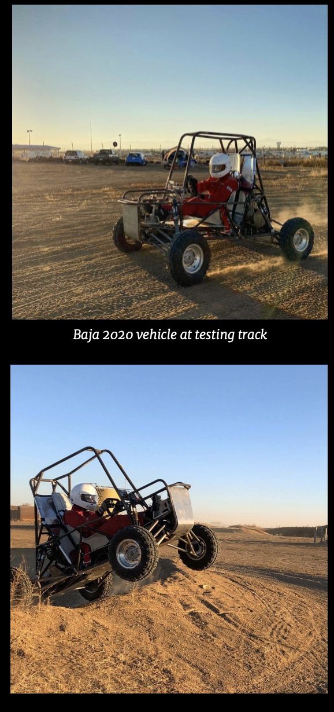

drivetrain engineer and finance manager

Vehicle Performance specifications
| Briggs & Stratton Vanguard Model 19 | 10 HP/14 ft-lb |
| CVTech | Min 3:1/Max 0.43:1 |
| Chain Drive Ratio | Min 2.5:1/Max 1.76:1 |
| Transfer Case Ratio | 2.07:1 |
| Front/Rear Differential Ratio | 3.82/1 |
| Final Reduction | Min 59:1/Max 42:1 |
| Efficiency | 75-80% |
| Theoretical Top Speed | Min 29 MPH/Max 41 MPH |
| Maximum Output Torque | 803 ft-lb at 3200 RPM |